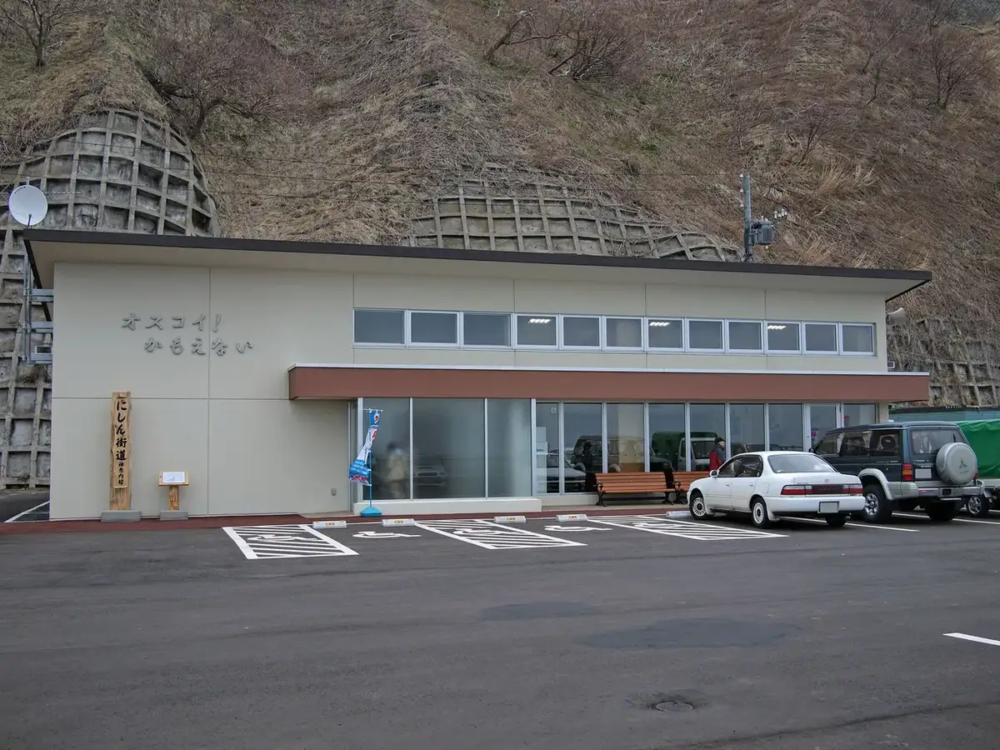
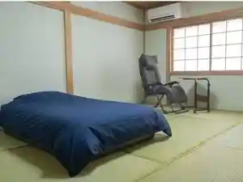
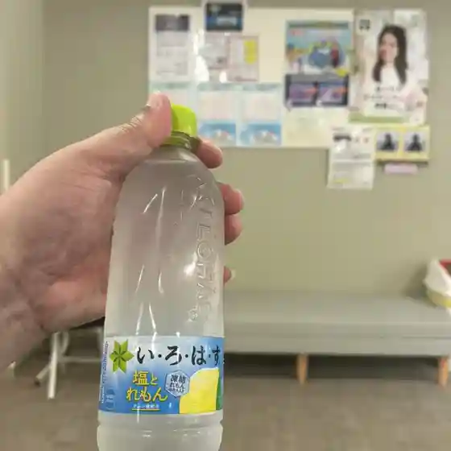
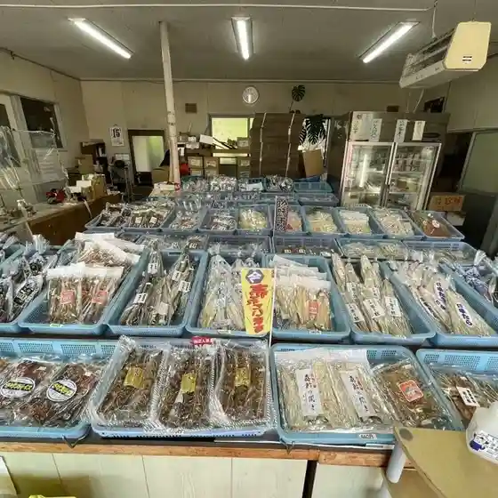
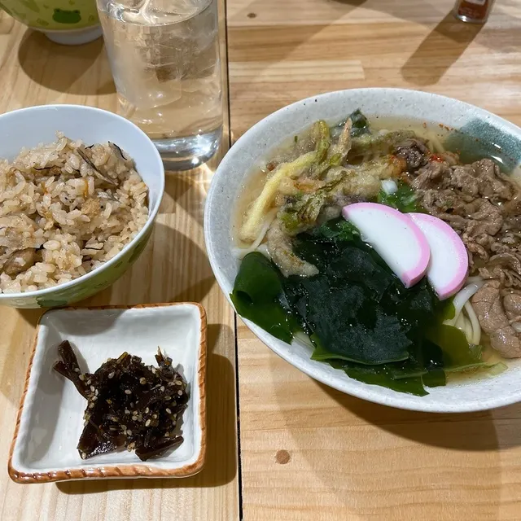
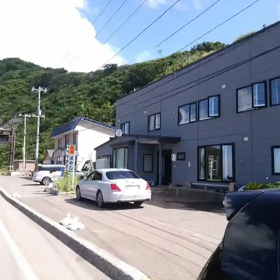
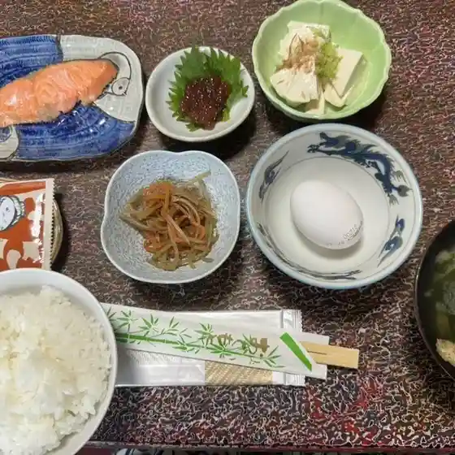
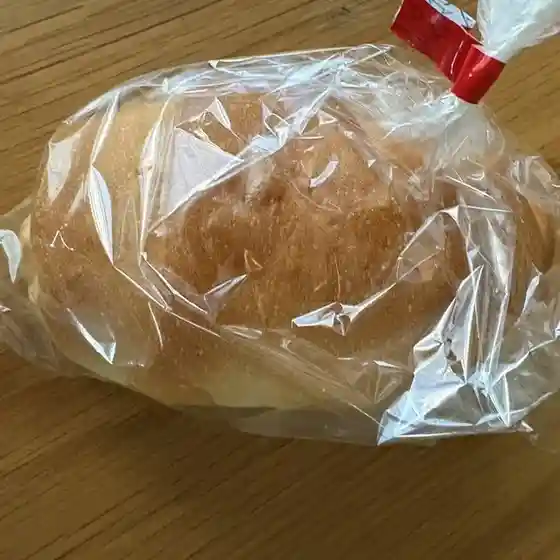

Kamoenai
Kamoenai · Hokkaido
Kamoenai
Highlighted on the Hokkaido map.

Stay
SPR港家

Spr Minato Ie
Dining
やましち

Yamashichi
かもえない龍神温泉

Kamoenai Ryuujin Onsen
民宿きのえ荘

Minshuku Kinoe Sou
菅原商店

Sugawara Shouten
居酒屋 共盛丸

Izakaya Tomo Jou Maru
はやし民宿

Hayashi Minshuku
恵比須屋旅館

Ebisu Ya Ryokan
パン菓子工房 calme

Pan Kashi Koubou Calme
Ristorante Mare
Ristorante Mare
オスコイ！かもえない
Osukoi ! Kamoenai
稲葉屋
Inaba Ya
綱城荘
Tsuna Shiro Sou
泊まれる喫茶店 ふくろま
Toma Reru Kissaten Fukuroma
勝栄鮨
Katsuei Sushi